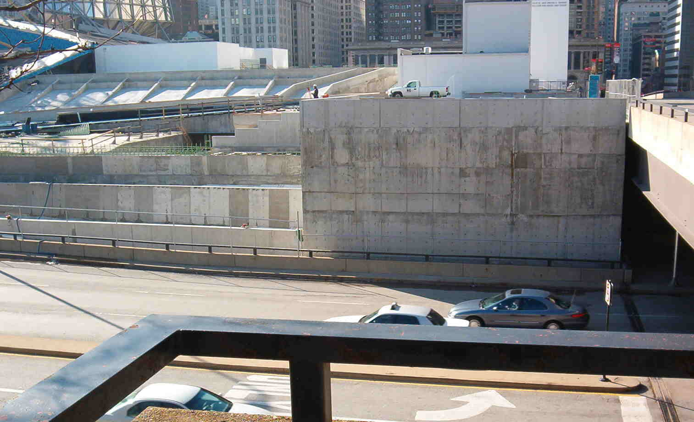

On Tuesday, October 7, 2003, a representative from the Chicago Department of Transporation presented a detailed plan for the Bicycle Station in the northeast corner of Millennium Park. During the discussion after the presentation, the audience learned that "another study" to determine the route to the planned station location has not been completed. The bike route from the lakefront may go up Middle Randolph to Middle Columbus OR a new undetermined route through the park and Upper Randolph could be recommended. This picture was taken on the afternoon of the meeting. Even though the lower floor of the storage facility is adjacent to the Middle Columbus sidewalk, the current plan anticipates a difficult route up flights of stairs to the proposed entrance and then back down interior stairs to the main storage area.
<.......................The main bike storage area is just inside this wall. It seems logical that this should be the entrance.
2 lanes from Upper Randolph
3 lanes extend east on Middle Randolph to the lakefront bike path. The south lane could be separated from traffic with a curb and used exclusively by bicycles.
Brighter lighting should be provided to make the transition from daylight safer. for the cyclists crossing Columbus at the traffic light.
Middle Columbus sidewalk
This page was last updated on: June 14, 2008
Page Visits

ARRIVE via Middle Randolph from Lake Front Bike Path.......A
B
C
D INSIDE
E INSIDE
F INSIDE
G
H Start walk to work.
The current plan is to follow A-B-C-D-E (store bike)-F-G (a little confusing)......
.... By simply using the required emergency exit at E as an entrance, the more direct path of A-E (store bike)-F-G-H would be much more efficient by avoiding B-C-D.